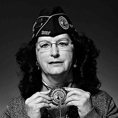
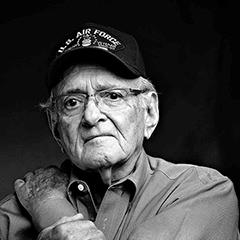

- 


- 


Ten Colorado veterans recall their experiences in times of war and peace, and express both excitement and dismay over the delayed Aurora VA hospital project.

Jim Sack
Navy
Colorado veterans needing major spinal-cord surgeries must travel out of state until a specialty center opens in the new VA hospital in Aurora.
Jim Sack, a 67-year-old veteran who uses a wheelchair, flew to Long Beach, Calif., for surgery in March. He finally came home six months later.
He praises the surgical care and physical therapy he received there. “They did a fantastic job,” he said.
But on his return to Colorado, he drove by the construction site of the new VA hospital. He was pleased to see workers there.
“I think it’s a very good thing. This will be updated, all fresh and all,” he said. “It’s going to be a lot better than Ninth and Claremont,” the existing Denver VA hospital.
He is disappointed, though, that the VA postponed PTSD and community living centers in Aurora to get the project completed. “We’ve got a lot of veterans with PTSD,” he said.
Sack enlisted in the Navy 50 years ago, straight out of East High School in Denver. He spent time in California and Alaska and aboard an aircraft carrier that cruised to the Gulf of Tonkin, serving as an air crewman with pilots who catapulted off its deck.
For the crew, a shipboard accident proved deadlier than the Vietnam War. Around Christmas Day of 1967, a liquid oxygen fire exploded across the carrier.
“I don’t know how many sailors we lost. They were sleeping right by the plant,” Sack said.
He cherishes other days he spent living on the water. “Dolphins and flying fish, they’d come out of the water by the ship,” he said. On calm nights, “the sea was like glass.”

John Rose
Army
On the morning of Sept. 21, 1953, a North Korean pilot named No Kum-Sok brazenly flew a MiG-15 aircraft in 17 minutes from a base near Pyongyang to Kimpo Air Base in South Korea, landing safely on its airfield.
He collected a reward worth nearly a million dollars today for becoming the first North Korean pilot to defect with a warplane.
John Rose, a Denver veteran of the Korean War, was among those who watched No land the wrong direction on a runway and park beside enemy planes.
“I was an Army engineer who built airfields,” he said. “This North Korean pilot flew this MiG in; he was surrendering. He got well-paid for that plane.”
Rose also remembers the safety net — literally a tennis net anchored with two big chains — deployed to keep pilots from overshooting the Kimpo base runway.
“It would slow down those planes when they hit that net. That was ingenious,” he said.
Rose came out of the war with no bullet wounds but lifelong kidney troubles. “Our company water got poisoned. We don’t know how,” he said.
Doctors found a tumor on his kidney and removed it. He’s been on dialysis for 15 years, and “they’ve given me a pretty good life.”
But “I’m very disturbed about the hospital” in Aurora, he said, because today’s volunteer Army has used the same soldiers again and again in two long wars.
“Combat will mess you up,” he said. “Repeated deployments, back and back and back. They need this hospital for them fast.”
Bonnie Rohn
Army
Bonnie Rohn didn’t hesitate to enlist in the Army during the Vietnam War.
“That was my dream since I was 12 years old — go in the Army and be a nurse,” she said.
And that’s what she did, straight out of high school in Casper. She left the family ranch in 1970 and spent the next seven years aiding patients — from soldiers with amputated limbs to pregnant women and abused children.
“I delivered my first baby in a helicopter,” she said. “This lady couldn’t wait.”
At the Presidio base in San Francisco, “I worked on the orthopedic ward. A lot of them were amputees,” she said. So she brought in guitars and drums “for jam sessions that GIs could get into while they were sitting on their beds.”
Her singing talent eventually led her to Fort Carson, where she was selected to join a command military touring show that traveled around the United States.
At Fitzsimons, she checked the health of babies born to military families and encountered cases in the pediatric ER that made her cry. “Some of the abused kids that came through there. ... ”
In particular, she remembers a little girl whose grandfather grew annoyed by the noise she made on a rocking horse. He picked up the horse with her astride and threw it on top of her.
“She broke all four limbs,” Rohn said. “We put her in a body cast.”
In Germany, Rohn also learned to drive an ambulance and a heavy truck. But when she left the Army with service-related disabilities, she found the VA didn’t have much patience with female patients.
That finally began to change in the last two years or so, she said. “Before, it took forever for women to get anything done. Women were ignored.”
Tom Bock
Air Force
At the height of the Vietnam War, Tom Bock worked on B-52 bombers for the Strategic Air Command.
He learned how to take apart and reassemble .50-caliber machine guns. He talked to the tailgunners who fired those guns while flying backward — “the only enlisted men on the entire crew,” he said.
Yet during his wartime service, he rarely used a gun and never flew a B-52.
“Four years in the Air Force, my feet never left the ground once,” he said, and “I only fired at the firing range two times.”
Bock signed up in 1966, as the ground war escalated during Lyndon Johnson’s presidency.
“I was just ahead of the draft,” he said. “It was literally hours ahead of the draft notice coming in the mail.”
While he labored in relative safety at a California base, “I had a lot of friends go over. Some didn’t come back,’ he said.
Bock’s best memory of his wartime years is a happy one. “I did get married in uniform here at Lowry Air Force in the chapel,” he said.
Lowry has since closed and been redeveloped as a Denver housing project.
Today, Bock is among the veterans who criticize the long-delayed Aurora VA hospital project and lament the lack of accountability for a billion-dollar cost overrun.
He thinks of people he knew who will never use its new state-of-the-art facility.
“My hero was Joe Ross,” he said, a field artillery soldier who landed in Le Havre during World War II and “marched all the way across France, then came back and became a schoolteacher. He ended dying up about two years ago.”

James Weaver
Navy
James Weaver will always remember two days from World War II.
The first was Dec. 7, 1941, when Japanese planes attacked Pearl Harbor. That inspired Weaver, who came from a family of fishermen and always liked the water himself, to join the Navy.
“My adopted dad was a World War I sailor,” he said, “and he would not let me go anywhere else but the Navy.”
The second was Sept. 4, 1943. He was on a boat near New Guinea, and “we took a torpedo from another ship,” he said.
It killed six men aboard. The explosion forced the ship upward, breaking Weaver’s back. &rlquo;Why I survived, I have no idea,” he said.
He proved to be one tough sailor.
After five months in a hospital, “ I went back to duty and spent 12½ years in the Navy,” he said. “I wasn’t scared a bit.”
Weaver turned 91 this year, and he hopes to live long enough to see the new Department of Veterans Affairs hospital open in Aurora.
“It should have been built years ago,” he said. “These bigwigs say, I’m going to do this,’ and then tomorrow they say something else. The VA should not be in the hospital business.”
Tom Wheaton
Navy
For Tom Wheaton, the enemy was an Australian politician on pain pills.
Twenty-seven years ago, Wheaton was walking across a street in Perth when a driver struck him at an estimated speed of 38 mph.
The collision snapped his leg, threw him over the car and broke his neck.
But it didn’t kill him — or his sense of humor.
“I didn’t get a 10 on that dismount,” he said, adding that he’s lucky to be alive.
Later he was told that the driver was a politician who had been prescribed painkillers after a recent helicopter accident.
For three weeks Wheaton lay in a hospital bed, paralyzed from the neck down. Then, slowly, he regained movement.
Twenty-seven years later he still uses a wheelchair but leads a vigorous life.
He lives in Golden with his wife and two children. He travels as a national leader for the Paralyzed Veterans of America. To keep in shape, he wheels up and down the hilly trails of his hometown.
Next year he will turn 50 — one of the reasons he is thankful the VA is building a hospital in Aurora with a spinal-cord treatment center.
“I was ecstatic when we heard from Congress on Sept. 30 that they finally gave us funding approval,” he said. “It’s going to be a world of difference.”

Bernie Rogoff
Air Force
Bernie Rogoff is not a doctor, but he often substituted for one during the Korean War years.
He arrived at MacDill Air Force Base in Florida in 1950. He served in its radiology department.
His medical duties didn’t stop there. “I worked in the ER, so I sewed up a lot of people. Guys who had been stabbed and cut. We did routine appendectomies,” he said.
“We didn’t have enough doctors in those days. We were trained at MacDill to do everything.”
In the armed services, some tragedies occur far from warfronts.
Rogoff remembers the day a KC-97 plane clipped the top of a fence and crashed on the runway.
“Twenty-three guys were burned to death. What I remember is seeing burned bodies of friends,” he said. “Entrails of their intestines lying on their bodies. It was 60 years ago, and I remember it like it was yesterday.”
That memory inspires Rogoff to keep helping today’s veterans. Now 85, he heads a college education foundation that assists Colorado National Guard families. He serves as the patient advocate on a Denver VA hospital committee and has campaigned relentlessly for the completion of the new hospital in Aurora.
He never gives up hope.
“We’re short on dentists, and we’re short on doctors, but making progress,” he said. “We’re doing the best we can.”

Darrell Myers
Army
Darrell Myers was an Army man. He joined in 1963 as a 17-year-old kid from Iowa and spent the next 19 years either on active duty or in the Reserves.
He was sent to Germany, where he worked as a track and wheel mechanic on Army vehicles at a time when the Vietnam War escalated along with tensions between the United States and the Soviet Union.
“We were on alert all the time,” he said, training for combat, practicing infantry tactics and field maneuvers. “We always knew that something could happen at any time.”
But that’s not what stands out in his memory now.
In 1973 and 1974, back home in the United States, “my unit went to Thermopolis, Wyo., and built a school,” he said.
“It’s still standing and still being used. Out of all my time, that’s my most memorable experience.”
Myers calls the hospital project in Aurora “a total example of squandering funds — not knowing where the money went.”
At the same time, he worries that Congress will use such scandals as an excuse to privatize the VA, “dumping 2-plus million veterans onto the private market. It’s going to be on the backs of veterans who can ill afford it.”
Dick Hogue
Army
Land mines were an invisible, pervasive enemy during the Vietnam War. They got Dick Hogue twice in two months.
The first time was Dec. 17, 1969. “Our point man tripped a land mine. It killed two guys,” he said. “I got a small piece of shrapnel in the side of my head.”
He escaped that one with a few stitches.
But on Jan. 27, 1970, his platoon took another hit. “Five of us were wounded, all seriously,” he said. His left leg was amputated below the knee.
Hogue spent seven months recovering from multiple injuries at the Fitzsimons Army Hospital in Aurora. He was medically retired in October 1970 and later wrote a book about his platoon.
“Twelve men in my platoon were killed. Probably that many more were seriously wounded,” he said. “Infantryman is the most dangerous job in the world, as far as I’m concerned.”
Hogue relies on the VA medical care system with mixed feelings these days.
For him and fellow combat veterans, “there’s not complaints about care. It’s complaints about getting into the system,” he said. “It can be a long wait time, up from two weeks to 30 days.”
Bill Gray
Army
In 13 years with the Army, Bill Gray traveled to exotic and less exotic places.
He spent time at Fort Bragg, N.C., and Fort Gordon, Ga. He also served in Corpus Christi, Texas, just north of the Mexican border, as well as Hawaii, South Korea and West Germany.
And, no, Hawaii was not his favorite assignment. He liked Stuttgart, Germany, where the Army had no quarters for him, “so I lived in a hotel for two years.”
He also found Stuttgart an exciting place to work. He specialized in communications, and Stuttgart “was the communication war center for all of Europe,” he said.
Europe was a tense, divided continent when he served there in the mid-1980s.
“The Berlin Wall was still up. I wish I could have gone to East Germany, but I couldn’t,” he said.
Ultimately, the deaths of his parents ended his Army career.
He became a single father to his brother, who was just 12 at the time. In Corpus Christi, “the Army went out of its way to help me be a single parent,” he said.
But another base insisted on an adoption that would have deprived his brother of benefits, so he left.
Gray uses the VA hospital in Denver now for medical care, and those visits inevitably leave him wondering why the agency didn’t claim an available hospital when the University of Colorado departed for Aurora.
“Why didn’t VA renovate that and the Denver center?” he asked. “They would have had a much bigger and better hospital.”
Copyright © 2015, The Denver Post
David Olinger, Writer
Greg Griffin, Editor
Cyrus McCrimmon, Photographer
Meghan Lyden, Photo Editor
Amy Brothers, Producer, Designer
Daniel J. Schneider, Developer